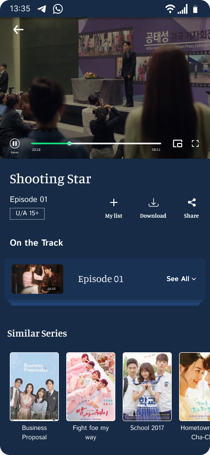
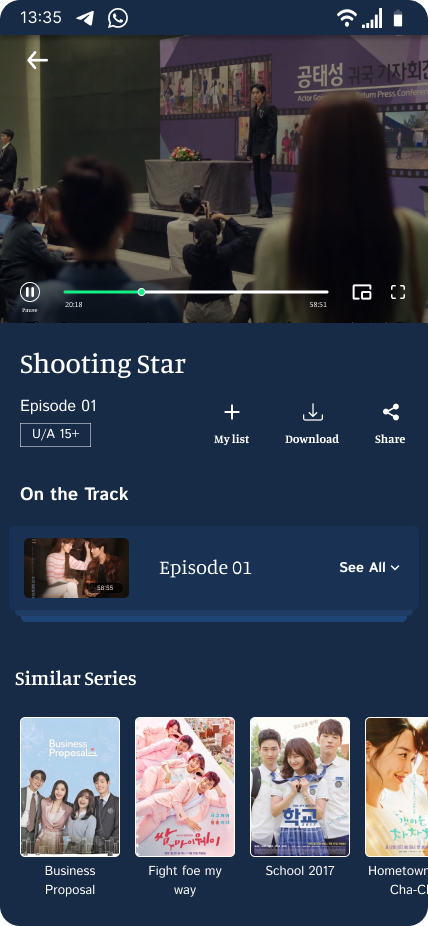

Drama App
Role: UI Designer
Tool: Figma
Duration: May 2023 - Jul 2023
Goal of the Project
This Drama App allows users to view, download their favorite drama and movies of language Korean, Thai, Mandarin, Taiwanese. Users can also filter their search results according to their preference of the language and genre.
This App is designed with the targeted audience who loves watching Korean, Mandarin, Thai dramas and movies. This App targets the users with phone and tablet.
Color palette
What's new in this Project
Quick Search Result
By using the filtering option, users can filter their search results easily. It holds options like language and genre selection to get their prefered search results easy and quick.
Key Challenges of the App
This Drama App allows users to view, download their favorite drama and movies of language Korean, Thai, Mandarin, Taiwanese. Users can also filter their search results according to their preference of the language and genre.
This App is designed with the targeted audience who loves watching Asian dramas and movies of language Korean, Chinese, Thai and Japanese. This App targets the users with phone and tablet.
Sample Wireframes


 


What I learned from this project
This App resembles most of the vedio playing app. I did research while designing the app, which holds reference from-MX player, and some drama websites like Viki app, kissasian.
To show differents and to add some more details which is not available in the orther apps, I added the filtering option which allows user to filter according to the language and genre of the drama, and can also pick age limit of the drama/ṁovie.
I also learned some prototype option with smart animation section, which gives smooth transition and holds the fixed content in its position (Task : while user looks for the information, episodes and reviews of the drama).
I learned how to create and use components and its variants for easy and quick alterations.
To Give feedback about this project Contact Me.
Back to Projects